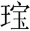

说文解字系传八册 二·○○ 一月二日
广雅疏证八册 二·五六
景宋本陶渊明集四册 二·○○ 一月六日
景宋本坡门酬唱集六册 三·○○
桃华扇传奇二册 一·二○
因明入正理论疏二册 ○·四○三 一月十日
石印宋本陶渊明诗一册 ○·五○
仿苏写本陶渊明集三册 四·○○ 一月十六日
观自得斋丛书二十四册 五·○○ 一月十七日
大秦景教流行中国碑额拓本一枚 杨莘士赠 一月二十六日
说文系传校录二册 一·○○ 一月三十日
随轩金石文字四册 二·四○二五·○六三
颜鲁公画象拓本一枚 杨莘士赠 二月六日
吉金所见录四册 二·○○
朱氏汇刻书目二十册 三·○○
说文统系第一图拓本一枚 ○·二○ 二月十五日
说文句读十四册 四·○○ 二月二十日
纫斋画賸四册 三·○○ 二月二十一日
毛诗稽古编八册 七·○○
景宋王叔和脉诀四册 二·五○
袖珍本陶渊明集二册 ○·五○二二·二○○
金石契四册附石鼓文释存一册 四·○○ 三月六日
长安获古编二册 三·○○
越画见闻三册 二·一○ 三月十一日
列仙酒牌一册 ○·七○
续汇刻书目十册 三·○○
残本积学斋丛书十九册 三·○○ 三月十三日
咫进斋丛书二十四册 六·四○ 三月二十一日
龙门造象题记拓片二十三枚 胡绥之赠三月二十八日二二·二○○
古学汇刊第十一集二册 一·○五○ 四月三日
文字蒙求一册 ○·二○ 四月十一日
吴越三子集八册 ○·四○
汉马曹拓片一枚 ○·二○
遯庵秦汉瓦当存二册 三·二○
遯庵瓦当［古镜］存二册 三·二○
敦交集一册 ○·七○
文始一册 一·五○ 四月十八日
补寰宇访碑录四册 ○·七○ 四月二十日
神州大观第七集一册 一·六五 四月二十一日
金石续编十二册 二·五○
越中金石记八册 二○·○○
射阳石门画象拓本等五种七枚 二·○○ 四月二十五日
曹望憘造象拓本二枚 ○·四○三七·七○○
武氏祠堂画象并题记拓本五十一枚 八·○○ 五月一日
黾池五瑞图并西狭颂二枚 二·○○
杂汉画象四枚 一·○○
两汉金石记六册 六·○○ 五月六日
丛书举要四十四册 六·○○
景宋京本通俗小说二册 一·二○
罗鄂州小集二册 ○·三○
金石萃编五十册 一四·○○ 五月八日
汉石刻小品拓本三枚 一·○○ 五月九日
汉永建五年食堂画象一枚 ○·五○
宋敬业造象拓本等三种三枚 一·五○
田胜晖造象拓本等三种六枚 一·二○
佛象巨碑拓本一枚 一·○○
西安所买杂帖十种二十枚 二·○○ 五月十日
文叔阳食堂画象等三枚 二·○○ 五月十六日
济宁州画象一枚 一·○○ 五月二十三日
张敬造象六枚 一·五○ 五月三十日
李夫人灵第画鹿一枚 一·○○
五凤二年石刻一枚 ○·五○五一·七○○
群臣上寿刻石拓本一枚 ○·六○ 六月六日
裴岑纪功碑拓本一枚 ○·八○
道兴造象并古验方二枚 一·○○
百汉研碑一册 三·○○ 六月七日
求古精舍金石图四册 五·○○
梵汉合文经幢等五种十枚 一·○○ 六月十日
赵阿欢造象等五枚 ○·三○ 六月十三日
晏如居缩刻古碑二十四枚 一·○○
古学汇刊第十二期二册 一·○五○
齐物论释一册 龚未生交季巿持来 六月十七日
孟广宗碑一枚 二·○○ 六月十九日
齐至后唐造象十二种十四枚 二·○○
筠清馆金文五册 四·○○ 六月二十日
望堂金石八册 六·○○
会稽掇英总集四册 四·○○ 六月二十七日
魏稼孙全集十四册 四·○○三五·七五○
李显族造象碑颂一枚 ○·八○ 七月一日
潞州舍利塔下铭一枚 ○·二○
常岳造象等四种四枚 一·○○ 七月三日
凝禅寺三级浮图碑一枚 一·○○
杨孟文石门颂一枚 阙额 二·○○ 七月四日
北齐等慈寺残碑及杂造象等九枚 四·○○
岳琪所藏造象十一种十五枚 八·○○
同州舍利塔额一枚 ○·五○ 七月七日
青州舍利塔下铭并额二枚 一·○○
张荣迁造象记三枚 一·○○ 七月十日
刘碑造象铭一枚 一·○○
马天祥等造象记一枚 ○·八○
岐州舍利塔下铭一枚 ○·五○
高伏德等造象三枚 ○·五○ 七月十七日
居士廉富等造象二种四枚 三·○○
鹤山文钞十二册 季自求贻 七月二十五日
垣周修塔象记拓本一枚 ○·五○ 七月三十一日 二五·八○○
丘世光造象等十种十四枚 七·○○ 八月一日
寰宇贞石图散叶五十七枚 六·○○ 八月三日
艺风堂考臧金石目八册 三·七○○ 八月五日
阮盦笔记五种二册 ○·八○
香东漫笔一册 ○·三○
古专拓本四枚 ○·二○ 八月六日
善业埿拓本二枚 ○·三○
齐杨就造象拓本等三种五枚 二·三○ 八月十二日
张龙伯造象记等拓本二种二枚 ○·八○ 八月十五日
王明造象拓本四种四枚 二·○○ 八月二十一日
比丘僧智道玩等造象拓本四枚 二·○○
贾子次诂二册 一·○○ 八月二十三日二六·四○○
永初三公山碑拓本一枚 三·○○ 九月五日
元氏封龙山颂拓本一枚 ○·八○
李清造报德象碑拓本一枚 一·○○
霍大娘造象拓本一枚 ○·一○
陆士龙集四册 二·五○
鲍明远集四册 二·五○
金刚经嘉祥义疏二册 许季上赠 九月七日
流沙坠简三册 一三·八○ 九月十二日
权衡度量实验考一册 三·○○
四朝宝钞图录一册 五·二○
金石萃编校字记一册 ○·五○
万邑西南山石刻记一册 ○·四○
说文古籀拾遗二册 一·二○ 九月十四日
通俗编八册 二·六○ 九月十九日
秦汉瓦当文字二册 五·四○
郑厂所臧泥封［封泥］一册 ○·三○
文馆词林汇刊五册 三·○○ 九月二十八日四八·三○○
樊敏碑朱拓本一枚 一·○○ 十月三日
嘉祥苓散汉画象拓本一百卅七枚 一四·○○ 十月四日
玉烟堂本急就章草法考二册偏旁表一册 郭令之诒 十月十二日
元宁造象记张神洛买田券拓本共三枚 一·○○ 十月十六日
云窗丛刻十册 八·○○ 十月十七日
碑别字补一册 ○·六○
严州图经二册 ○·五○
景定严州续志二册 ○·四五
严陵集二册 ○·五○
爨龙颜碑拓本一枚 三·二○ 十月二十三日
端州石室记拓本一枚 ○·八○
甲寅年国学丛刊八册 四·三五 十月二十四日
后子孙吉专拓本二枚 陈师曾诒 十月二十七日
郭氏石室画象并感孝颂等二十枚 五·○○ 十月三十日
沂州杂画象十四枚 三·○○
食斋祠园画象一枚 一·○○
孔子见老子画象一枚 一·○○
济宁杂画象二枚 ○·六○
杂造象十二种十四枚 四·○○四九·○○○
正光二年砖拓本一枚 一·○○ 十一月六日
薛姬造象拓本等五种七枚 二·○○
山右石刻丛编二十四册 六·○○
爨宝子碑拓本一枚 ○·八○ 十一月二十日
程哲碑拓本一枚 ○·八○
宝梁经拓本一枚 一·四○
磁州出土六朝墓志并盖拓本十二枚 三·○○
王绍墓志拓本一枚 ○·五○ 十一月二十一日
汉画象残石拓本一枚 一·○○ 十一月二十四日
许始等造象拓本四枚 二·○○
周天成造象拓本一枚 杨莘耜赠 十一月二十七日
薛山俱二百人等造象拓本四枚 六·○○
刘平周等残造象拓本三枚 一·八○
陈叔度墓志一枚 ○·二○
白石神君碑并阴二枚 一·○○ 十一月二十八日
郑道忠墓志一枚 五·○○
淳于俭墓志等五枚 二·○○
杜文雅等造象四枚 二·五○
杜照贤等造象四枚 二·五○三九·五○○
苍颉庙碑并阴侧共四枚 二·○○ 十二月四日
延光残碑一枚 一·五○
郑能进修邓艾祠碑一枚 一·五○
杜文雅等造象二枚 ○·六○
光州刺史高庆碑一枚 ○·六○ 十二月五日
营州刺史高贞碑一枚 ○·六○
侍中高盛碑一枚 ○·六○
冀州刺史关胜颂德碑一枚 ○·六○
比丘道

造象记一枚 ○·六○杂古专拓片十六枚 二·○○
王僧墓志并盖二枚 二·○○ 十二月十一日
李超墓志一枚 一·五○
标异义乡慈惠石柱颂十一枚 三·○○
青州默曹残碑三枚 一·五○
无极山碑一枚 一·○○ 案此三公山神碑也目误 十八日注
孝宣公高翻碑一枚 ○·七○
陈君残碑并阴二枚 一·○○
杂造象六枚 一·○○
仲思那造桥碑一枚 〔○〕·四○
兰陵王高肃碑一枚 一·○○ 十二月十八日
贺若谊碑一枚 一·五○
司马景和妻孟墓志一枚 一·○○
华岳庙残碑一枚 一·○○ 十二月十九日
报德玉象七佛颂一枚 一·○○
爨龙颜碑并阴全拓二枚 九·○○
李谋墓志一枚 ○·六○
时珍墓志一枚 ○·四○
于纂墓志一枚 二·○○
西门豹祠堂碑并阴二枚 一·五○ 十二月二十五日
曹恪碑一枚 二·○○
宋买造象并侧一枚 ○·五○
张法乐造象一枚 ○·五○
杂造象并舍利塔铭五枚 一·○○
孟显达碑一枚 一·○○ 十二月卅一日
神州大观第八集一册 一·六五四八·三五○
总计四三二·九六三○ 十二月卅一日灯下记。
[1] 至第一舞台观剧 湖北省赈灾京剧义演，假座北京前门外西柳树井大街第一舞台举行。鲁迅于1914年12月30日捐助湖北赈款，得到观剧券一张。是为鲁迅最后一次观看京剧。
[2] 最写邓氏《墨经解》 最写，即撮写。《墨经解》，原名《墨经正文解义》。鲁迅因其“重行更定之文，虽不尽确，而用心甚至，因录以备省览”。只撮录正文未录其注解，题作《墨经正文》。1918年重阅时作《〈墨经正文〉重阅后记》，现编入《集外集拾遗补编》。
[3] 大秦景教流行中国碑 唐代的基督教碑刻。唐贞观九年（635）基督教聂斯脱利派（景教）僧侣阿罗本自波斯来中国，建波斯寺，后称大秦寺。建中二年（781）立此碑，上刻中文碑记一千七百八十字，概述景教在中国流传的经过。明代天启三年（1623）在陕西周至出土。
[4] 会议学礼 袁世凯任总统期间，推行祭孔礼，要求循古制。教育部为此专门集中培训执事和陪祀人员。
[5] 五等嘉禾章 袁世凯制定勋章等级，大勋章为总统佩戴，下分九等，均刻嘉禾，以绶色分别等级，称嘉禾章。另外尚有陆军白鹰勋章和海军文虎勋章。鲁迅按官阶受五等嘉禾章。
[6] 鼯鼠蒲桃镜 即《坟·看镜有感》中说到的“海马葡萄镜”。
[8] 往新帘子胡同看屋 仍为京师图书馆寻找新址。7月决定迁往安定门内方家胡同国子监南学。
[9] 在崇圣祠执事 教育部“丁祭”时，各司派出陪祀员五人，执事员三十二人。鲁迅被派为在崇圣祠正位执事十人之一。
[10] 《会稽郡故书杂集》书衣 鲁迅托陈师曾和钱玄同为《会稽郡故书杂集》封面题签。陈师曾本日所写封面题字，于次日寄往绍兴；钱玄同所书封面字也于10日寄到。后采用陈师曾的题签。
[11] 伊文思图书公司 英国人爱德华·伊文思（Edward Evens）在上海北四川路三十号开设的书店，以销售西文书为主。
[12] 文澜阁 清代庋藏《四库全书》的七大阁之一，在杭州西湖孤山南麓。
[13] 指章太炎所书条幅，内容录《庄子·天运》：“变化齐一，不主故常。在谷满谷，在阬满阬。涂却守神，以物为量。”
[15] 明刻《嵇中散集》 为张溥刻本。鲁迅是日以之校初校本。
[16] 中央公园 在北京天安门西侧。原为明清皇家祭祀土地神、五谷神的社稷坛。1914年辟为公园。1928年改称中山公园。
[17] 通俗教育研究会 继中国通俗教育研究会之后，由教育部另行筹办的官方组织，以“研究通俗教育事项、改良社会、普及教育”为宗旨，会员由京师各有关机构选派。本年8月3日教育部委派包括鲁迅在内的二十九人加入该会，8月19日召开“预备会议”，讨论该会成立的各项具体筹备工作。9月1日又派鲁迅兼任该会小说股主任，迄次年2月辞去该项兼职，改任小说股审核干事。
[18] 方家胡同图书馆 1915年6月教育部指定在国子监南学设立京师图书馆筹备处，7月间该筹备处即由广化寺迁至国子监南学新址。因国子监南学位于方家胡同，故称方家胡同图书馆。此时该馆已由夏曾佑专任馆长。
[19] 协议移交《四库全书》办法 热河文津阁所藏《四库全书》运京为内务部截取后，经教育部多次交涉，1915年8月25日内务部始同意归还教育部，由京师图书馆收藏，故教育部派鲁迅等往商移交手续及日期。此项工作至10月12日结束。
[20] 参加通俗教育研究会成立大会。会上由首任会长梁善济发表有关该会宗旨的演说，并推选高步瀛等三十三人为干事。
[21] 小说股第一次会 这次会议在鲁迅主持下讨论了本股办事细则、例会日期及进行方法等。
[22] 《事略》 即《亡女叕事略》。9月8日，章太炎长女、龚未生之妻章叕自缢身亡，章太炎于11日撰此文。
[23] 指小说股第二次例会。会上讨论办事细则，并由股员分任调查、审核、编辑、翻译工作。
[24] 指小说股第三次例会。会上讨论工作进行方法，并由鲁迅推定起草小说审核标准的人选。
[25] 指小说股第四次例会。会上讨论小说审核标准，主要研究小说分类问题。
[26] 指小说股第五次例会。会上修正小说审核标准，并决定先就通俗图书馆内现藏小说着手调查。
[27] 医学专门学校 即国立北京医学专门学校。1912年筹办，校址在后孙公园，校长为汤尔和。
[28] 指小说股第六次例会。会上讨论向通俗图书馆借书办法及前经教育部审核而未由该会复核的小说应如何办理等问题。
[29] 指通俗教育研究会第二次全体大会。会上由新任教育总长张一麐致“训辞”，鼓吹小说要“寓忠孝节义之义”，并宣布由新任教育次长袁希涛兼任该会会长。
[31] 江西振捐 1915年7月江西霪雨成灾，抚、赣诸江河与鄱阳湖水同时泛滥，灾情严重。
[32] “白人” 疑为“白匕”之误。“白匕”，古代刀币之一种。
[33] 指小说股第八次例会。会上讨论查禁小说宜预先通饬案。（第七次例会于11月10日举行，日记未记。）